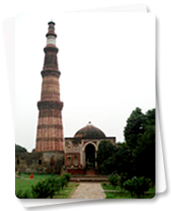

दिल्ली एक ऐसा शहर है जो दो भिन्न दुनियाओं को आपस में जोड़ता है। कभी इस्लामी दुनिया की राजधानी रही पुरानी दिल्ली, संकरी गलियों की एक भूलभुलैया है, जिनमें जीर्ण-शीर्ण हवेलियां और दुर्जेय मस्जिदें हैं। इसके विपरीत, ब्रिटिशों द्वारा तैयार नई दिल्ली का आधुनिक खुलापन लिए हुए है, जहां कतार में लगे पेड़ों वाले एवेन्यू और भव्य सरकारी भवन हैं। दिल्ली लगभग एक सहस्त्राब्दी तक अनेक शक्तिशाली राजाओं और कई साम्राज्यों की गद्दी रही है। कई बार यह शहर बसा, उजड़ा और पुनः निर्मित हुआ। यह रोचक तथ्य है कि दिल्ली के शासकों ने दोहरी भूमिकाएं, पहली विध्वंसक के रूप में और बाद में निर्माता के रूप में, निभाई।
इस शहर का महत्व ने केवल इसके अतीत में राजाओं की गद्दी और भव्य स्मारकों के कारण है बल्कि, इसकी संपन्नता और बहुमुखी संस्कृति के कारण भी है। इसमें कोई आश्चर्य नहीं है कि दिल्ली की संस्कृति के इतिहास में चन्द्रबरदाई और अमीर खुसरो से लकेर आज के दौर के सभी लेखकों ने इसके बारे में लिखा और अपना योगदान दिया। दिल्ली में आप कई बेहतरीन स्मारकों एवं स्थानों से परिचित होंगे जैसे: बेहतरीन पुराने स्मारक, अद्भुत संग्रहालय व कला दीर्घाएं, स्थापत्य कला, जीवंत कलाकृतियां, लोकप्रिय व्यंजनों के स्थान तथा भीड़ भरे बाज़ार।
दिल्ली भारत का राजनैतिक केन्द्र भी है। देश की प्रत्येक राजनैतिक गतिविधियां यहां देखी जा सकती हैं। ऐसी पौराणिक युग के संदर्भ में भी सत्य है। महाभारत के पांडवों की राजधानी इन्द्रप्रस्थ थी जो आज की दिल्ली के भौगोलिक क्षेत्र में स्थित मानी जाती है।
दिल्ली के तथ्य
क्षेत्रीय: 1,483 वर्ग कि.मी. अक्षांश समानांतर: 28.3°N देशांतर मेरिडियन: 77.13°E ऊंचाई: समुद्र तल से 293 मी. ऊंचा जनसंख्या: 13.85 मिलियन (2001 की जनगणना के अनुसार) औसत तापमान: 45°C सेल्सि. (अधिकतम) - सामान्यतः मई-जून में 5°C सेल्सि. (न्यूनतम) - सामान्यतः दिसंबर - जनवरी में वांछनीय ड्रेसिंग: सर्दियों में ऊनी और गर्मियों में हल्के सूती कपड़े वर्षा: 714 मि.मी. मानसून: जुलाई से मध्य-सितंबर जलवायु: गर्मियों में बेहद गर्म और सर्दियों में बेहद सर्द भ्रमण का सर्वश्रेष्ठ समय: अक्तूबर से मार्च एसटीडी कोड: 011 भाषाएं: हिंदी, अंग्रेजी, उर्दू और पंजाबी धर्म: हिन्दू, इस्लाम, सिक्ख, बौद्ध, जैन, ईसाई, पारसी, यहूदी और बहाई मत